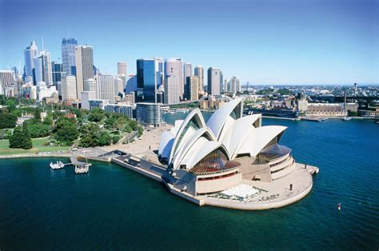
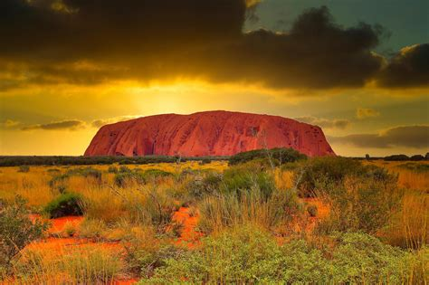
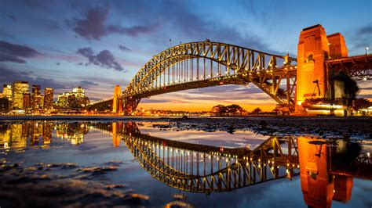
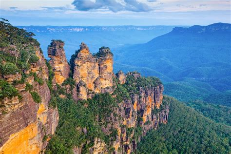

Australia
Australia is a land of dreams. From the sacred legends of the Aboriginal Dreamtime, when the great spirits conjured the coral reefs, rainforests, and red deserts, to armchair travelers who describe Australia as their dream destination, the Land Down Under deserves all the hype. The world's smallest continent and largest island, Australia is almost the same size as the United States but with a population the size of New York State and some of the quirkiest wildlife on the planet.
-
Sydney Opera House, New South Wales
Mention "Sydney, Australia" and most people think of the Opera House. Shaped like huge shells or billowing sails, this famous building on Sydney's Bennelong Point graces the list of UNESCO World Heritage Sites and is one of the world's great architectural icons.
The location is stunning. Water surrounds the structure on three sides, and the Royal Botanic Gardens border it to the south.
Danish architect, Jørn Utzon won an international competition for its design but withdrew from the project after technical and financing problems. Construction was finally completed in 1973 at a cost 10 times the original budget. By this time, Utzon had left the country, never returning to see his magnificent creation.
Today, you can enjoy a performance here, dine at one of the restaurants, or see the highlights of the Sydney Opera House on a guided tour. The structure encompasses theaters, studios, a concert hall, exhibition rooms, and a cinema.
Touring the interior of the Sydney Opera House is rewarding, but its striking architecture is perhaps best appreciated from a distance. One of the best sites to photograph this top Sydney tourist attraction is Mrs Macquarie's Chair in the Royal Botanic Gardens, or you can hop aboard a harbor cruise or ferry and capture a photo from the water as you glide past.
Currently, the Sydney Opera House is undergoing a 10-year, $275-million upgrade, but it will continue to operate during the restoration.
-
Great Barrier Reef Marine Park, Queensland

You can't leave Australia without seeing the Great Barrier Reef. This World Heritage-listed natural wonder is one of the largest living structures on the planet. It's so vast, you can see it from outer space. For divers, snorkelers, island aficionados, and nature lovers, it's a bucket list destination.
In 1975, the Great Barrier Reef Marine Park was established to protect its fragile ecosystems. These include more than 3,000 coral reefs; 600 continental islands, including the beautiful Whitsunday group; 300 coral cays; and inshore mangrove islands.
One of the seven wonders of the natural world, the park stretches for 2,300 kilometers along the state of Queensland, on Australia's east coast (that's about the distance between Mexico and Vancouver).
Not surprisingly, the Great Barrier Reef is one of the best places to visit in Australia for diving and snorkeling. The astounding array of marine life includes soft and hard corals, more than 1,600 species of tropical fish, sharks, dugongs, dolphins, turtles, rays, and giant clams. Prefer to stay dry? You can see the reef from underwater viewing stations and glass bottom boats.
Travelers have many options for visiting the Great Barrier Reef. You can cruise around the islands, hop aboard a sightseeing flight, take day trips to the islands, or snorkel and dive the reefs. On the mainland, the main launching points for tours are Cairns, Port Douglas, and Airlie Beach.
-
Uluru-Kata Tjuta National Park, Northern Territory
Deep in the heart of Australia's Red Centre, Uluru (formerly Ayers Rock), is one of the most photographed natural wonders in the country. The striking red monolith forms the centerpiece of Uluru-Kata Tjuta National Park, a World Heritage Site jointly managed by Parks Australia and the traditional landowners, the Aṉangu people.
Uluru, meaning "shadowy place" in the local Aboriginal dialect, rises to a height of 348 meters from the surrounding plain. Most of its bulk is hidden beneath the earth's surface.
Also in the park are the red dome-shaped rocks called Kata Tjuta (the Olgas).
As the sun dips in the sky, sightseers gather to watch the colors of Uluru and Kata Tjuta transform in the shifting light. A great way to appreciate these sacred sites is to join a tour led by Aboriginal guides and rangers.
-
Sydney Harbour Bridge, New South Wales
Along with the Opera House, the Sydney Harbour Bridge is one of Australia's top architectural icons. Affectionately called "the Coathanger," this impressive feat of construction is the largest steel arch bridge in the world. It was completed in 1932, 40 years before the Sydney Opera House.
One of the top things to do in Sydney is a guided ascent to the top of the bridge, where you can enjoy spectacular views over the harbor and city. Rising 134 meters above the harbor, the bridge spans 500 meters, connecting Sydney's North Shore to the central business district. In addition to the pedestrian path, two railway lines extend over the bridge, as well as eight lanes for road traffic, and the direction of each lane can be switched to accommodate traffic flow.
For an overview on the bridge's history and construction visit the museum in the southeastern pier.
Fun fact: Paul Hogan, of Crocodile Dundee fame, worked as a painter on the bridge before rocketing to international stardom.
-
Blue Mountains National Park, New South Wales
A UNESCO World Heritage Site, beautiful Blue Mountains National Park is a hiker's paradise and a popular day trip from Sydney. It lies an easy 81-kilometer drive west of the city.
Named for the blue haze emanating from the many eucalyptus trees, this stunning park protects more than 664,000 acres of wilderness. On a visit here, you can explore dramatic gorges, waterfalls, Aboriginal rock paintings, and 140 kilometers of hiking trails.
The most famous attractions in Blue Mountains National Park are the towering sandstone rock formations called the Three Sisters. Other highlights include the Katoomba Scenic Railway, the world's steepest, which whisks passengers down the Jamison Valley through a cliff-side tunnel into an ancient rainforest; and the Skyway, Scenic Cableway, and Scenic Walkway, which all offer elevated views of the dense forests.
Hiking, abseiling, rock climbing, mountain biking, and horseback riding are all popular things to do in the park.